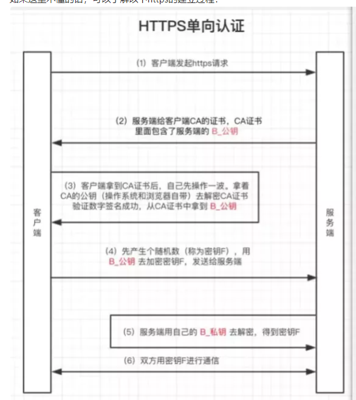
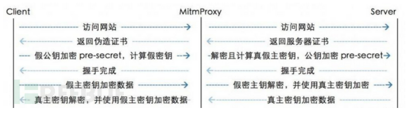
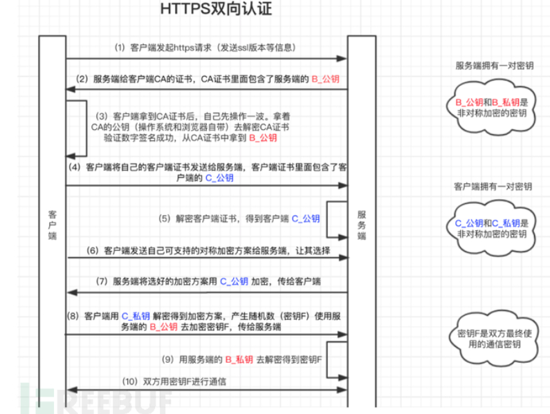

APP渗透
目录
对抗大致有这几类
·无防范措施，直接上burp，把CA证书装好就可以抓包了（仅采用单向认证，或者根本就没有证书验证功能） · 采用ssl pining防范中间人抓包 · 使用双向认证防范中间人抓包 ·检测模拟器，以防范中间人抓包 ·检测是否启用了代理，来防范中间人抓包（你抓包肯定要走代理是吧） ·检测是否root过，root过就闪退，来防范中间人抓包
抓包
包都抓不了，谈何渗透。
app抓包会遇到大致下列认证方式。我们一一讨论
单向认证
单向认证是HTTPS中，客户端对服务端进行身份校验的一个环节。
但是这个身份校验可以被轻而易举的绕过，如果目标APP仅使用了单向认证而没有额外启用SSL pining防护的话，那就等同于没有防范措施，直接把burp生成的CA证书在手机里装好就可以抓它的包了。

上图是HTTPS单向认证的一个流程图，可以发现只做了客户端对服务端的校验。
那么burp是如何绕过单向认证进行抓包的呢？答案在于burp生成的那张CA证书。 在了解单向认证之前，我一直不了解为什么使用burp抓包的时候要专门在浏览器中安装一个CA证书，现在知道原因了：Burp生成的CA证书是伪造出来给客户端（浏览器、APP）看的，准确来说生成的是CA证书的根证书，其包含公钥、散列值等信息，公钥用来解密作为中间人的burp发来的CA证书，获取B_公钥（CA证书使用私钥加密，公钥解密），这一步对应着上图中的“自己先操作一波”的内容。除此之外，解密后的内容的散列值也会与公钥附带的散列值进行比对，判断证书是否一致。

中间人并不会把服务端返回的证书原封不动的返回给客户端（因为如果原封不动的返回给客户端，后续客户端用证书获取的公钥来加密的密钥F对于中间人来说就是未知的了，因为中间人没有证书对应的私钥解密获取密钥F），而是自己生成一张新的伪造的证书返回给客户端，因为证书是自己生成的，所以知道该证书的私钥，从而解密获得客户端发来的密钥F，从而截获客户端发出来的请求。
而由于服务端对客户端并没有证书校验这个环节，所以只需要中间人不需要提供任何凭证，只需要纯纯的模拟客户端的行为即可。
随后中间人就获得了 客户端-中间人的密钥F1，服务端-中间人的密钥F2，然后只需把客户端发来的数据用F1解密，然后用F2加密发送给服务端，把服务端发来的数据用F2解密，F1加密发送给客户端即可，中间还可以篡改消息内容，实现中间人攻击，也就是说完成了抓包。
SSL pining
https://owasp.org/www-community/controls/Certificate_and_Public_Key_Pinning
厂商们自然也不是傻子，知道单靠单向认证无法防止抓包后，就推出了两种防范措施：针对单向认证安全性的优化方案SSL pining和新的一套认证模式双向认证。这里就先说说SSL pining这个使用广泛一点的保护措施。
ssl pining是用于防范中间人攻击的技术，被用于HTTPS中。 可以看作是为单向认证打造的一套防范中间人攻击的措施。它的核心思想是把服务端证书的关键信息写入代码层，工作时解密服务端发来的证书，将其与代码层写死的绝对真实的服务端证书的关键信息进行比对，从而判断服务端发来的证书是否是伪造的。
SSL pining细分为两种，分别是 证书锁定（Certificate Pinning）和公钥锁定（Public Key Pinning）
所谓证书锁定，就是客户端（APP）代码层写死了所能接受的证书的散列值，如果服务端发来的证书的散列值与其不一致，则使本次通讯认证失败。值得一提的是证书锁定在证书需要经常更换的情况下，那么客户端应用程序也需要跟着更新内部代码中证书的散列值。
所谓公钥锁定，就是客户端（APP）代码层写死了证书解开后的公钥，然后与服务端发来的证书解开后的公钥进行比对，判断是否一致。
这样看来，客户端使用SSL pining后还会检验证书，我们伪造一个CA证书给客户端的方案似乎行不通了，那怎么绕过呢？
绕过方案
1.反编译剔除校验代码
顾名思义，就是反编译目标APK，然后剔除校验证书的代码，再重新编译成apk。前提条件是目标APP没有完整性检查.
代码关键字：checkserver、certification。certificate、X509
2.Xposed框架+JustTrustMe（需root）
Xposed框架是一款开源框架，其功能是可以在不修改APK的情况下影响程序运行(修改系统)的框架服务，基于它可以制作出许多功能强大的模块，且在功能不冲突的情况下同时运作。Xposed 就好比是 Google 模块化手机的主体，只是一个框架的存在，在添加其他功能模块(Modules)之前，发挥不了什么作用，但是没了它也不行。也正因为如此，Xposed 具有比较高的可定制化程度。Moto X 用户可定制手机的外观、壁纸、开机动画等，Xposed 则允许用户自选模块对手机功能进行自定义扩充。
JustTrustMe：https://github.com/Fuzion24/JustTrustMe/releases
JustTrustMe 一个用来禁用、绕过 SSL 证书检查的基于 Xposed 模块。简单来说，JustTrustMe 是将 APK 中所有用于校验 SSL 证书的 API 都进行了 Hook，从而绕过证书检查
3.Frida绕过（需root）
双向认证

双向认证比起单向认证，多了服务端校验客户端的步骤。这种情况，一般比较少，因为它的安全性与ssl pining一致但是消耗的计算机资源更多。
绕过方法大致有两种
·反编译APP，找到证书的私钥 · HOOK APP对数据进行解密的地方，直接获得明文
抓包实操
安卓7以下版本
安卓7以上版本
在安卓7以上的版本，安卓只信任根CA了，而在老版本中可以信任用户CA。而加入根CA需要root权限，
检测代理功能
root隐藏
ios抓包
有些程序只支持ios。
mac抓包
mac可以直接安装ios的app。(只能m芯片） 安装后通过proxifier或者clash设置代理即可完成抓包，爽的一。而且ios端的app防护啥的都不如安卓，可以说是很鸡儿爽。
adb使用
adb可以连接安卓的shell，很好用。
远程连接
先插上usb
adb devices 查看是否连接上
adb tcpip 5555 开启手机5555调试端口
adb connect ip:port 连接手机调试端口
adb shell 进shell
远程安装apk
adb logcat 开启logcat
adb install -r ~/Downloads/TPLAppPersonInsuAdrPhone.2.4.4.1100.apk